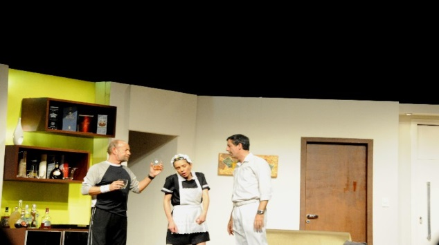
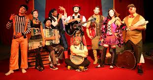
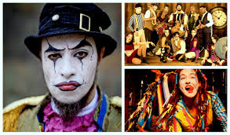

1) a. No trecho a seguir, da peça teatral “Tarsila” - de Maria Adelaide Amaral, separe as personagens e suas falas:
Tarsila – ( Para Oswald) Você tem um Cadillac azul?
Oswald – Só comprei porque tinha cinzeiro.
Mário – ( Levantando-se ) Por que não mostramos à dona Tarsila essa maravilha contemporânea?
Personagem
Fala
b. A linguagem predominante nesse texto teatral é mais formal ou informal?
c. Dê exemplos das duas linguagens extraídos do quadro acima.
d. O que você entende por linguagem formal? E informal o que significa?
e. Rubrica – é o nome dado à indicação no texto teatral ( ou texto dramático ) de como um ator deve executar um movimento, um gesto ou uma fala da personagem. Retire dessas falas, acima, a rubrica:
2. Observe a cena, abaixo. Crie as personagens e suas falas.

Personagem
Fala
3. Depois desses estudos, complete com o número adequado:
(1) Narrativa em Prosa
estruturada pelos versos e estrofes./td>
(2) narrativa em verso/estrofes
estruturada pelas rubricas e falasde personagens.
(3) narrativa do texto
estruturada em parágrafos.
4. As peças teatrais geralmente são divididas em atos, quadros e cenas.
Atos – divisão de cenas (pausas) quando a peça é muito longa. Quadros – mudanças mais radicais de cenário. Cenas – são as menores unidades narrativas, um momento da peça.
Observe a imagem abaixo e desenvolva as questões (pensamento livre):

a. Que título você daria à peça?
b. Quantas personagens?
c. Número de atos:
1
2
3
d. Quantos quadros você criaria em cada ato desta peça? Explique cada um deles.
e. Essa cena lembra:
5. Sempre é bom rever:
a. Vocativo – é o nome que se dá ao termo da frase que contém um chamamento, um apelo.
-Menino, saia da chuva!
b. Sujeito - é o termo da oração de quem ou de quê se diz alguma coisa.
O menino caminhava na chuva.
c. aposto – é um termo que se associa a um nome explicando ou especificando o seu sentido.
O menino, aluno do 8º ano, saiu no meio da chuva.
d. Aponte-os nas falas, abaixo, circulando-os (clique para circular):
Godofredo – Filhinho, beba o leite!
Filho – Não! O leite está muito amargo!
Godofredo – Engraçado! Esse leite, produto de primeira qualidade, não pode estar amargo!
6. Narrando experiências.

Você já assistiu a peças teatrais! Conte essa experiência.
Como era a história? Fale de personagens, conflitos, roupas apresentadas (figurinos), cenários.
Que emoções não foram esquecidas? O teatro traz magia?